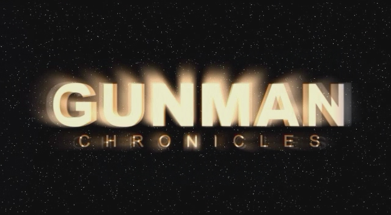
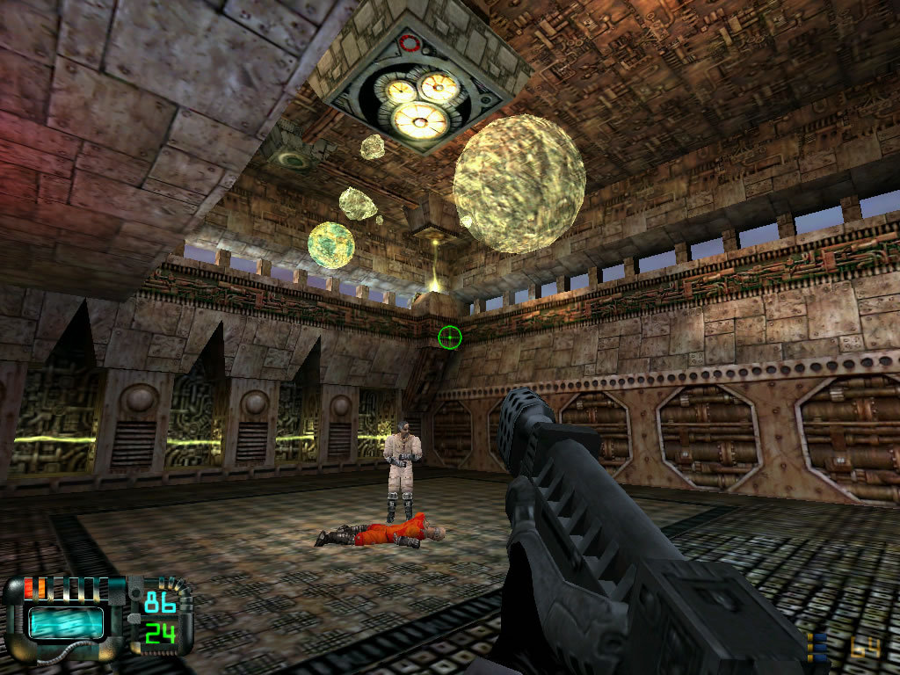

New article! Read about Gunman Chronicles, an officially sanctioned Half-Life mod that acts as a stepping stone between corridor shooters and the expansive scope of later titles like Halo.
The game opens in a collapsing, prehistoric jungle temple where the General’s stooges ambush your allies in a crossfire; the massive breadth and complexity of this scene dwarfs nearly anything attempted before it. The game doesn’t often evoke that sense of innovation, though, mainly because of its close resemblance to its forebears. The ingredients for a more daring shooter are in place, but it plays like… well, a Half-Life mod. A great Half-Life mod, of course, but one working on a larger canvas with the same paints. When you drive a tank across a desert or evade a drone ship patrolling the skies, those moments are exciting and fresh but still distant from the genre’s epic battles to come.